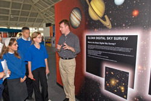

SDSS Education and Outreach
The Sloan Digital Sky Survey offers teachers and informal science educators a
wealth of astronomical data and images through lesson plans, interactive
media, presentations and more.
Our materials will show your students everything from asteroids in our
own solar system to the most distant quasars ever observed! Students can
explore truly exotic objects such as carbon stars, methane dwarfs, and
supernovae, all using the same high-quality data that professional
astronomers use.
Tools for Educators
- SkyServer — Visit
the Science Projects section for lessons, activities and games
appropriate for kids of all ages. Most use the SDSS data exclusively. A
parallel set of project pages specifically for
educators include a project overview, background, lesson plan,
teaching tips, assessments and information on how each project links to
national science, math and technology standards.
- American
Museum of Natural History's Science Bulletins feature on the SDSS
— The bulletin features essays on the survey, interactive media and
videos. A separate area provides resources
for educators.
- In particular, check out this essay
and the accompanying
video for an excellent introduction to the SDSS project.
- World Wind — This
open source software for Windows lets you zoom through the sky using the
SDSS data set. Start by downloading and installing World Wind from worldwind.arc.nasa.gov. Then
download and install the SDSS add-on from www.worldwindcentral.com.
- COSMUS
— The COSMUS group produces visualizations that explain scientific
concepts and data. They have created several visualization tools for SDSS
including an interactive 3D fly-through of the universe and an
interactive walkthrough of Apache Point Observatory.
-

Professor Nichol
(ICG
Portsmouth) shows children from Avon Valley College around the new SDSS
exhibit at the Intech Science Center. |
If you're in Winchester UK, visit the SDSS Exlore the Universe
exhibit at the Intech Science
Center.
- SDSS/RC3 Atlas — This
atlas, put together by the cosmology group at NYU (led by David Hogg), has high-quality
images of RC3 galaxy catalog members in the Sloan footprint.
- Galaxy Zoo — This site allows anyone
to classify SDSS observations of galaxies. A great tool to look at real
scientific data!
SDSS Materials in Other Languages
Translations of some of the data access tools and educational projects on the SDSS SkyServer
by clicking on the flags at the top of the page. Translations of parts of the
site are available in German, Hungarian, Spanish, and Portuguese.
The SDSS education and outreach website is also available in Belarusian.
Educational projects in Spanish are available through
Bling Bling Universe.
Galaxy Zoo is also available in
German, French, and Polish - click on the dropdown menu in the top left corner
to change languages.
Presentations for Outreach
The materials below are provided for noncommerical use. Please credit the
author and SDSS when using the complete presentations or any part of the
materials. If you distribute any part of these presentations or printed
copies of any SDSS material, please abide by the guidelines set out by the
collaboration for acknowledging credit.
- David Hogg's SDSS full-survey zoom — a 13-frame animation
which centers on M51 and zooms out to the full survey volume. When
showing this animation in presentations, please give credit to the author by
showing it through to the last frame.
- Steph Snedden and Mike Harvanek's presentation
- Rich Kron's SDSS presentations
- Julie Lutz and Kristine Washburn's presentation and bookmark. Please
feel free to print the bookmark on cardstock and distribute to colleagues.
{kind=link}